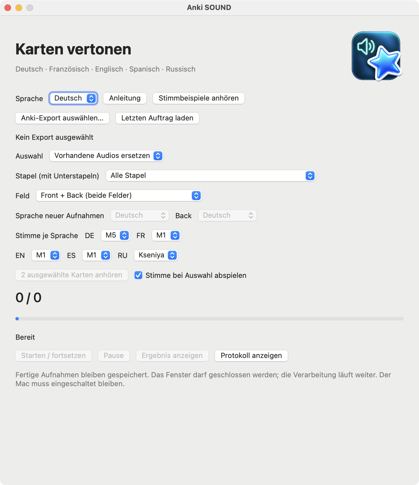

macOS 13+ · Apple Silicon
Anki SOUND
Ergänzt ausgewählte Anki-Karten um lokale Sprachausgabe und erstellt ein separat geprüftes Paket.
Release · 3.4.11Vor dem StartPython 3.9–3.12; Internet für die erste Installation von Paketen und Stimmen. Keine Apple-Notarisierung.


So funktioniert es
- Anki-Karten
- Stimme einrichten
- Sprachausgabe ergänzen
Erste Schritte
Den gesamten Ordner an einen beschreibbaren Ort entpacken. SETUP.command, danach OPEN.command starten; einen .apkg-Export wählen.